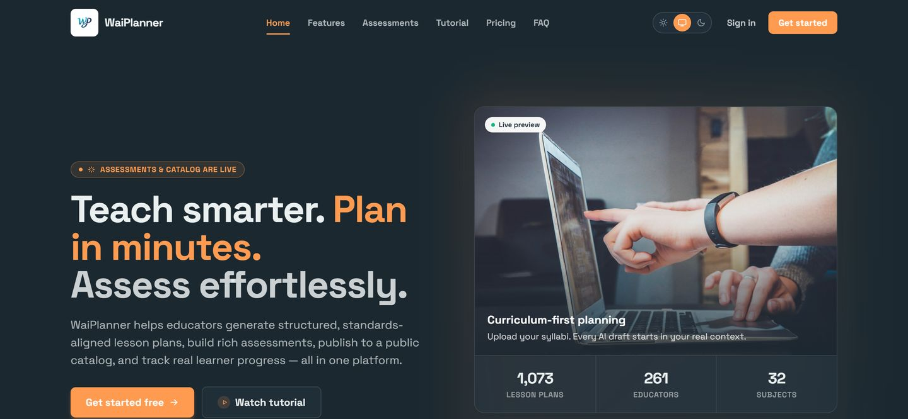

WaiPlanner
AI lesson planning and assessment built around Eswatini’s EGCSE, JC and CBE syllabi. Teachers plan lessons, turn exam papers into assessments and mark learners’ work, and AI-drafted questions can’t be published until a teacher has verified them.

From the live site, 4 November 2026
- Lesson plans generated
- 1,073
- Educators signed up
- 261
- Syllabus subjects
- 32
How an assessment moves through it
-
Upload
A teacher uploads a question paper and its marking scheme.
-
Extract
AI drafts the questions, marks and answers from the source.
-
Verify
The teacher checks each item against the paper. Publishing stays blocked until they do.
-
Sit
Learners write on a timer. A live monitor shows who’s still writing, with one-tap extra time.
-
Mark
AI-assisted marking reads typed and handwritten answers and uses rubrics for essays. Results come back for review.
Also in the build
- Google sign-in using OpenID Connect
- School workspaces with invitations and roles
- Teacher, learner and parent accounts
- Syllabus import with validation and a change preview
- Queued AI jobs with daily usage limits
- Subscriptions, payments and creator payouts
- Installs on phones as a web app
Stack
Laravel 12 and PHP 8.5, React with Inertia, the OpenAI API, queue workers and automated tests. Deployed on DigitalOcean App Platform.